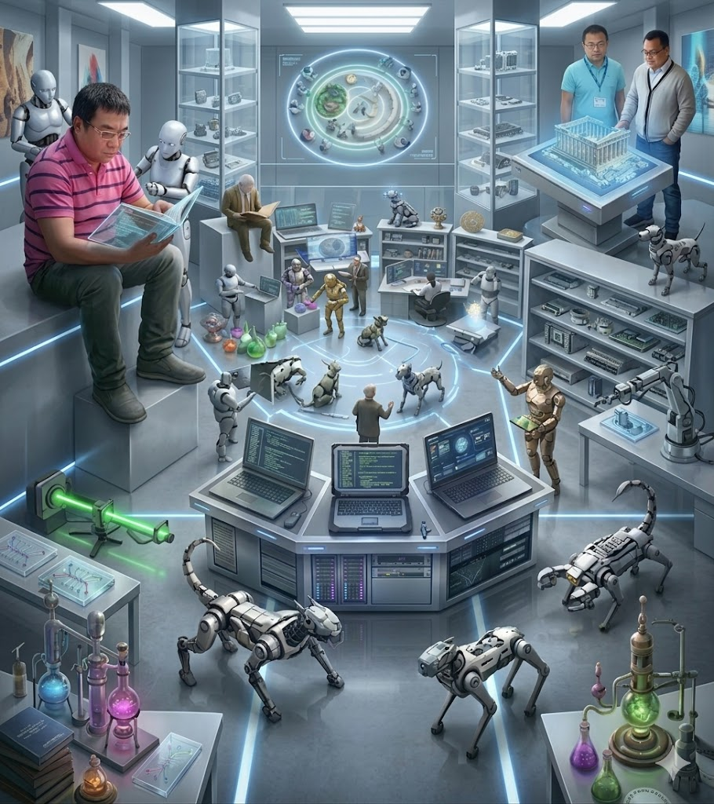

陈黎教授，2006年毕业于新加坡南洋理工大学信息工程系。回国后组建了智能机器视觉实验室 (IMVL)，致力于人工智能、机器视觉及多模态大模型的理论突破与应用结合。
目前入选湖北省杰出青年基金、湖北省新世纪高层次人才工程，并担任多家科技公司“科技副总”。他在国内外顶刊顶会发表论文 140 余篇，其中包括 IEEE TIP、TSP、TMI 及 CVPR、AAAI 等。
Email: chenli@wust.edu.cn
招生咨询: 52282375 (欢迎热爱编程与 AI 的同学报读)
主攻视觉-语言-动作 (VLA) 模型、扩散模型控制机制简化及生成式 AI 理论。
深入研究曲线网状结构分割、医学影像分析（血管检测）及工业级智能检测。
结合高性能计算与机器人阵列，探索智能体在物理场景中的感知增强与闭环交互。
Kai Zhu, Li Chen*, Jun Cheng. [News Link]
Rui Xiong, Li Chen*, Zhida Feng, et al. (Accepted Dec 2025)
Zhida Feng, Li Chen*, et al. 39(3), pp. 3013-3021. [AAAI Link]
Feng Zhida, Chen Li*, et al. pp. 9110-9119. [CVPR Link]
Zhida Feng, ..., Li Chen*, et al. pp. 10135-10145. [Paper Link]
Lei Mou, Li Chen*, et al. (1), pp. 1392-1403.
* 累计发表核心论文 140 余篇，涵盖 IEEE TIP、TSP、TSMC、Signal Processing Letters 等。
依托湖北省重点实验室，拥有 1400 平方米科研场地，设备总值逾 6000 余万元。
配置 10 台华为 Atlas 800T A2 训练服务器，总算力达 34.5 PFLOPS，辅以多台曙光高性能并行服务器。
宇树人形机器人 G1 (3台)、四足机器人 B2-W / Go2 / Go2-W (共5台)，及 Franka 双臂、遨博协作臂。
🏆 湖北省科技进步二等奖 (序1, 2017)
🏆 湖北省科技进步二等奖 (序5, 2015)
🏆 湖北省科技进步三等奖 (序4, 序7)
📜 美国发明专利 (US 12,436,267 B2): 水面目标自适应跟踪
📜 中国发明专利: 人脸区块链隐私保护、仪表图像畸变消除等多项授权。
实验室毕业生广泛进入行业领军企业工作：
实验室目前专注人工智能理论与应用的结合研究。欢迎喜欢编程、有志于突破 AI 边界的同学报考硕士或博士研究生。